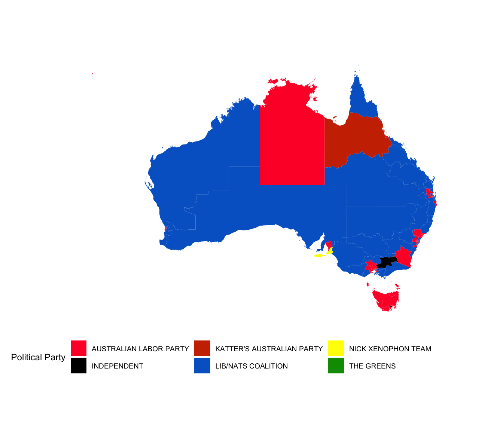

vignettes/plotting-electorates.Rmd
plotting-electorates.RmdThis vignette describes how to make a map of the Australian election results. It requires merging polygons of the electoral regions, with election results using the electorate id’s or unique names. The nat_map16 contains the electorate polygons and fp16 contains the results of the 2016 Federal election.
There are state-specific pseudonyms for the Liberal-National Party coalition, and for illustration purposes these are grouped into one category we will call “Liberal National Coalition”. These political groups are set colours that roughly match their party colours.
# Grouping different Lib/Nats togethers
map.winners$PartyNm <- as.character(map.winners$PartyNm)
map.winners <- map.winners %>% arrange(group, order)
# Colour cells to match that parties colours Order = Australian Labor Party,
# Independent, Katters, Lib/Nats Coalition, Palmer, The Greens
partycolours = c("#FF0033", "#000000", "#CC3300", "#0066CC", "#FFFF00", "#009900")library(ggthemes)
ggplot(data = map.winners) + geom_polygon(aes(x = long, y = lat, group = group,
fill = PartyNm)) + scale_fill_manual(name = "Political Party", values = partycolours) +
theme_map() + coord_equal() + theme(legend.position = "bottom")
However, the Australian electoral map is not conducive to chloropleth map, because most of the population concentrate in the five big cities, Sydney, Melbourne, Brisbane, Adelaide and Perth, which means that there are lot of very geographical tiny regions that contribute substantially to the house of representative composition. A better approach would be to use a cartogram to display the election results, which would maintain the geographic location but make the sizes of the electorate polygons approximately equal. This is very hard to perfect for Australia because the size differential between electorates is huge, resulting in a cartogram where all sense of geography is demolished.
A compromise is to use a non-contiguous, dorling cartogram, and represent each electorate with a circle, approximately in the geographic center of each electorate, with an underlying map. The major population centers need to have their center locations ballooned to make this feasible visually. This is achieved by extracting the electorates for each of the population centers, exploding the geographic center locations using the dorling algorithm, and then pasting them back into the landscale of all the electorates, using the aec_add_carto_f function in the package (or step by step with the aec_extract_f, aec_carto_f and the aec_carto_join_f functions). The resultant coordinates for each election are saved in the nat_data01, nat_data04 etc. datasets distributed with the package, they are labelled x and y. This data is used to create the display of electoral results below.
# Load election results
cart.winners <- fp16 %>% filter(Elected == "Y") %>%
select(DivisionNm, PartyNm) %>%
merge(nat_data16, by.x="DivisionNm", by.y="elect_div")
# Plot it
ggplot(data=nat_map16) +
geom_polygon(aes(x=long, y=lat, group=group, order=order),
fill="grey90", colour="white") +
geom_point(data=cart.winners, aes(x=x, y=y, colour=PartyNm), size=1.5, alpha=0.8) +
scale_colour_manual(name="Political Party", values=partycolours) +
theme_map() + coord_equal() + theme(legend.position="bottom")